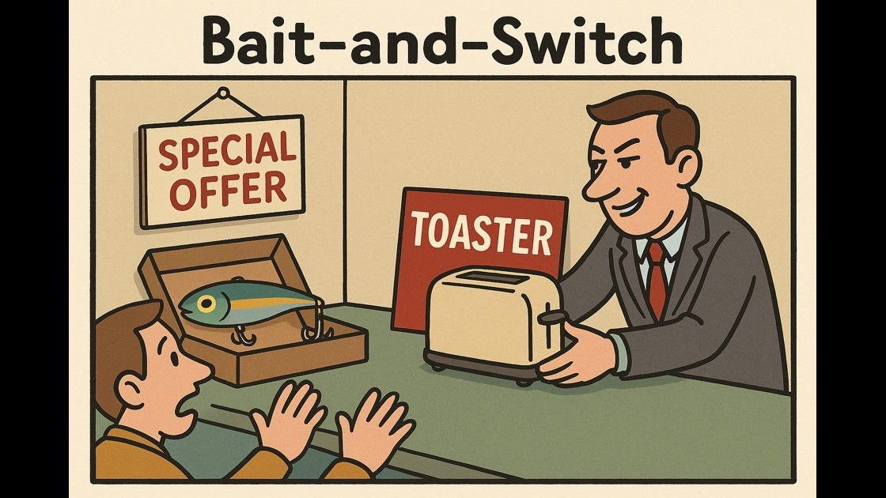
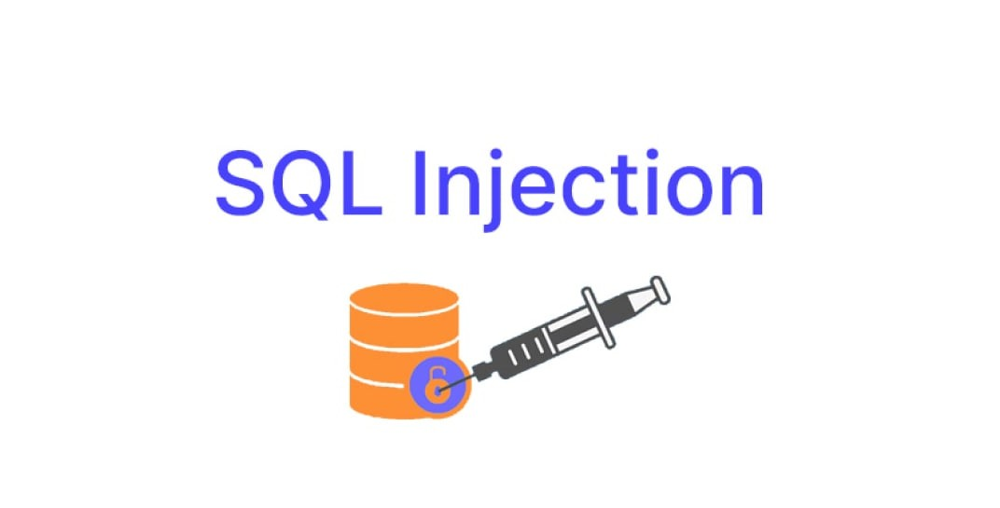

Tipos de Hacking
Seccion 1 - Phishing

Robo de identidad: consiste en el envío de correos electrónicos o mensajes que aparentan ser de
entidades legítimas, como bancos o redes sociales, con el objetivo de robar información confidencial
de los usuarios, como contraseñas o datos bancarios
Seccion 2 - Ataque de denegación de servicio (DoS)

En este ciberataque, el objetivo del actor malicioso es una una maquina o servicio no se encuentre
disponible para el usuario al que va dirigido, interrumpiendo el funcionamiento normal del mismo
los ataque DoS suelen funcionar al sobrecargar una maquina con solicitudes hasta que el trafico normal es
incapaz de ser procesado
Seccion 3 - Cebo y Cambio

En este ciberataque, El atacante engaña al usuario para que realice una acción que parece legítima o
beneficiosa, pero que en realidad ejecuta un código malicioso
Seccion 4 - Inyección SQL (SQLi)

es uno de los ciberataques más antiguos y peligrosos que existen. Ocurre cuando un atacante logra
"colar" código malicioso dentro de las consultas que una página web envía a su base de datos